図解とは？
図解とは、事柄や概念を図形の組み合わせによって表わすもののことである。たとえば、グラフは図解の一種である。なお、グラフについては【→グラフの作り方】を参照せよ。
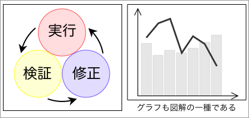
なお、表やイラスト（説明的な絵）は図解には含まれない。
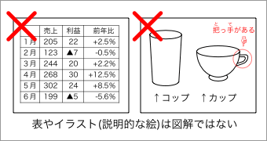
図解の特徴
文章は言語なので、読んでいくのに時間が必要である。一方、図解は本質的に『絵』なので、全体を短時間で見渡すことができる。
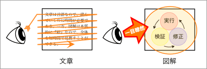
ただ、図解は『絵』であるといっても、特殊な絵である。一般的な絵画とは異なり、芸術性ではなく論理性が重視される。
図解と一般的な絵画
| 図解 | 優れた図解 |
| 論理性が重要 | 尤もらしさが必要 | 見た人を納得させる |
| 一般的な絵 | 優れた絵 |
| 芸術性が重要 | 美しさが必要 | 見た人を感動させる |
図解と言語表現の違い
言語表現（文章）が、推論によって理解されるのに対して、図解は直観的に理解される。文章と図解とは、次のような形式的特徴を持っている。
文章と図解
| 理解のし方 | 内容の表示 | 現実との関わり方 | 事柄の表示 | 展開のし方 |
| 文章 | 推論による | 言語的 | 類似性
（特徴の共有） | アナログ的 | 物語的 |
| 図解 | 直観による | 絵画的 | 相似性 | デジタル的
（輪郭が明瞭） | 因果的 |
図解は、直観的な理解を求める手段としては、文章よりも優れた方法であるといえる。一般に、図解は、全体のイメージや要素の関連性を伝えやすい性質を持っている。そのため、大まかなイメージを素早く大勢に伝えようとするときには、図解が最も合理的な選択肢である。
イメージの伝達：図解＞言語
しかし、図解をクリティカルな用途に用いるべきではない。たとえば、図解で契約書を作る人はいないであろう。図解は絵であり、直感によって理解されるものである。したがって、図解の理解には個人間の違いが大きいと考えなければならない。たとえば、
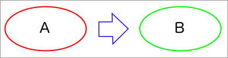
という図解の「→」の意味は何であろうか？ある人は「ならば」の意味だと理解するかもしれない。また、ある人は「だから」の意味だと理解するかもしれないし、「しかし」の意味や「変化した」の意味だと理解する人もいるであろう。つまり、図解は共通理解の形成には不向きである。一般に、共通理解の形成で効果的なのは言語である。
共通理解の形成：言語＞図解
伝達における図解と言語の特徴は、次のようにまとめられる。
- 図解
- 大まかなイメージを素早く大勢に伝える
- 言語（話しことば）
- 多くの情報を素早く相手に伝える
- 言語（書きことば）
- 正確な内容を確実に人々に伝える
図解の使用と文章の使用
文章を使用する（書く／読む）には、ある程度高度な言語能力が必要となる。一方、図解を使用するときには高度な言語能力は不要である。一般に、図解は文章よりも、作成や修正が容易である（時間がかからない）。また、図解は文章よりも視覚的効果が高いといえる。対象に人の関心を向けさせたい場合には、文章よりも図解の方が適していると考えられる。
| 図解 |
高度な言語能力は不要 | 作成が比較的容易 | 大幅な内容の変更も容易 | 視覚的効果が高い |
| 文章 |
高度な言語能力が必要 | 作成が比較的困難 | 大幅な内容の変更は困難 | 視覚的効果が低い |
図解の種類
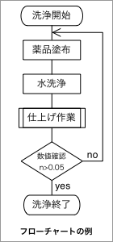
図解には、実用的な図解と広告的な図解とがある。
たとえば、作業工程を示したフローチャート flow chart （流れ図）などは実用的な図解の例である。
一方、プレゼンテーションやパンフレットに使われる図解は、多くの人にイメージを知らしめることが目的であり、広告的な図解であるといえる。なお、広告的な図解では、箇条書きの図解化がしばしば行なわれる。くわしくは、【→箇条書きの図解化】を参照せよ。
なお、デジタルプレゼンテーションについては、「日本語文書処理」の【プレゼンテーションとは？】も参照せよ。
- 広告的な図解の目的
-
- 多くの人にイメージを伝える
- 特定の事柄・主張を印象づける
- ミスリードする（相手の理解を誘導する）
図解作成の基本
- ひとつの図解にひとつのテーマ
- １つの図解に２つ以上のテーマを入れると、直観的な理解が難しくなる
- 図解のテーマをはっきりと示す
- 何のための図解かを本文や口頭で説明する・図解にタイトルを明示する
- 既存のパターンを組み合わせる
- 常用されるパターンを利用することで、イメージの共有がしやすくなる【→既存のパターンの利用】
図解作成時の注意
図解を作成するときには、以下の点に注意する。
論理性を失わないように注意する
図解では、論理的な明瞭さが重要である。そのためには、以下の点に注意する。
- 矢印の意味を統一／整理する
- 矢印の内部や近くに矢印が表わす意味を書き込む
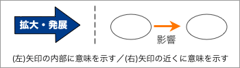
- 矢印が表わす意味に応じて矢印の形や線の太さを変える【→矢印の使い方】
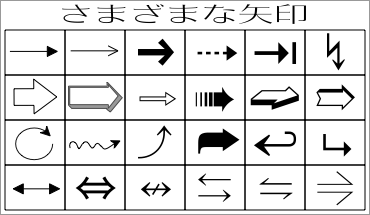
- 図形のレベルを一致させる
- 同じレベルのキーワードは同じ図形で囲み、異なるレベルでは図形の形や線の太さを変える【→囲みの使い方】
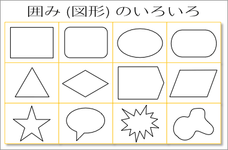
過剰な装飾やイラストは加えない
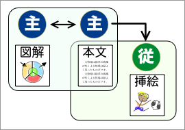
図解は挿絵（本文に関連する絵）ではない。
挿絵は、文章の理解を助けたり、版面を装飾する目的で挿入される補助的・附属的なものである。
一方、図解は、イメージを伝える目的で行なわれる本来的なものである。ポイントを明確にするためにも、図解はシンプルなものがよい。カッコよすぎるデザインやかわいいキャラクターは不要である。
- ヴィジュアルに頼りすぎない
- 絵としての完成度の高さで、内容の貧弱さを補おうとしてはいけない。装飾的なデザインは、論理的に作られた図解の価値を高めるものではあっても、それ自体に価値があるのではない。また、キャラクターや具象的なイラストは、「軽い」「不真面目」などと受けとられる恐れがあるので、使用しない方が無難である
- "カラーバリアフリー"を心掛ける
- 図は視覚に訴えるものなので、個人の視覚的な差異にも配慮した方がよい。健常者には普通に見える配色も、視覚障害者には負担となることもある。
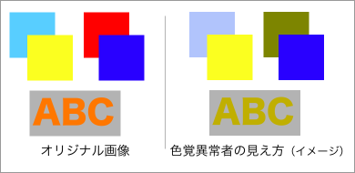
- 図解の配色では、以下の点に注意する
- 前景と背景との組み合わせは、暗い色と明るい色の組み合わせにし、似た色は重ねないようにする
- 白色と黒色をベースにし、あまり多くのカラーを使わないようにする
- 色覚異常のシミュレーションは、Vischeckで可能である。プレゼンテーションファイルをPNGに書き出してアップロードすれば、無料でシミュレーション結果を得ることができる
図解ですべてを伝えようとしない
すべての要素をとりこんだ図解が必要になるのは、学術論文など限られたケースにすぎない。一般的な図解は、ポイントだけを表わしていればよいのである。
高度な内容を図解する必要はない
学術論文の本文や付録に掲示される図解であれば、高度に専門的な内容や複雑な関連性を含んでいてもやむをえない（読み手は研究者なので、時間がかかっても何とか解読するあろう）。
しかし、プレゼンテーションや企画書に用いる図解は、理解しやすいものの方がよい。高度な内容を伝える必要があるのならば、図解ではなく文章を用いて丁寧に説明するべきである。
図解も文化や言語の差を反映する
言語は、その言語を理解する人にしか伝わらない。しかし、図解が万国共通であるというわけはない。図解の理解にも、文化や言語が反映することがあるので、文化的・言語的背景の異なる人に図解を示すとき、また図解を翻訳するときには注意が必要である。
図解を作成する
以下では、図解を作成する基本的な方法と注意点について学ぶ。なお、グラフの作成については【→グラフの作り方】を参照せよ。
図解の基本
図解の基本は、図形（囲み）を線か矢印でつなぐことである。
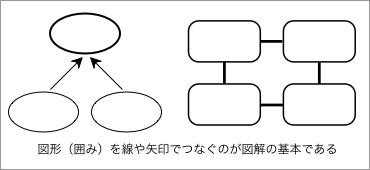
手描きの図解
図解を作成するときは、まず手描きで作成する。
簡単なミーティングや打ち合わせで使うものであれば、手描きの図解をそのまま使ってもよい。正式な資料とするときは、コンピュータなどを利用して清書する必要がある。
手描きで図解するときには、次のようにするとよいだろう。
- キーワードを書き出す：
◊ 図解しようとするテーマに関係のある語を書き出す
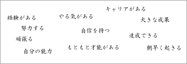
- キーワードを整理する：
◊ 重要性の低いものや重複するキーワードを削除する
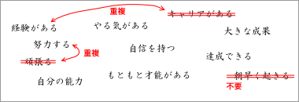
- キーワードを枠で囲む：
◊ 整理したキーワードを、とりあえず丸で囲んでみる
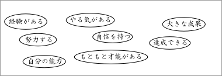
- 囲みを線・矢印で結ぶ：
◊ キーワード間の関係を考えながら線・矢印でつなぐ
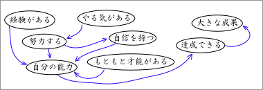
- 囲みや線を再配置する：
◊ 囲みや線を、それぞれが見やすい位置に移動させる
- 表現の形式を統一する：
◊ 囲みの中の表現のレベルを統一し、語句を修正する
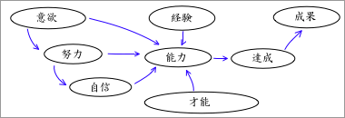
以上で、一応の図解が出来上がる。必要に応じて囲みを統合する囲みなどを加えてもよい。
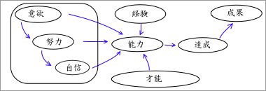
図解の清書
なお、図解を清書する場合には、さらに次のような手順が必要になる。
- 図全体をデザインする：
◊ 論理構造を適切に表示するようデザインを変更する
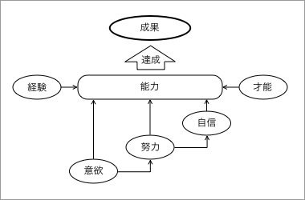
※ここでは、次のようにデザインを変更している。
１）手描きの図解を左回りに90度回転させて縦の配置にする
２）矢印が集中する「能力」を大きくし、囲みの形を変える
３）矢印の終点にあたる「成果」を大きくし、線を太くする
４）「達成」には変化の意味が含まれるので、矢印に変える
５）それぞれの囲みの位置を揃える (縦・横とも整列させる)
- 図解の細部を修正する：
◊ より効果的になるよう形・色・装飾などを修正する
- 必要な情報を付加する：
◊ 図解のタイトルやポイント、出典などの情報を書く
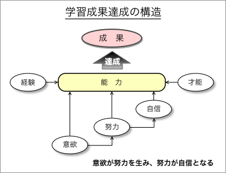
なお、図全体をデザインするときは、既存のパターン（図解でしばしば使われるデザインのパターン）を利用したり、参考にすることで、作業が進めやすくなる。詳しくは、【既存のパターンを利用する】を参照せよ。
図形の使い方
効率的に図解を作成するためには、図形の使い方を知らなければならない。ここでは、まず図形（囲み）と線・矢印の使い方について学ぶ。
囲みの使い方
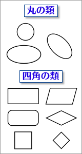
囲みの基本は、丸と四角である。どちらもわかりやすく親しみがある形なので、さまざまな図解で広く用いられている。
幅と高さが同じならば、丸よりも四角の方が、内部の面積が大きくなる。そのため、多くの文字を囲むときに長方形が使われることが多い。一方、円などは、比較的短い語句を囲むときに使われる。円は内部の面積が比較的小さく、視覚的にも（実際の大きさより）小さく見える傾向があるので、たくさんの文字を囲うと見づらくなる。
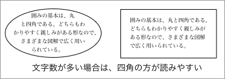
また、丸と四角とは、視覚的な印象が大きく異なるため、表現したい内容にあったイメージのものを選ぶことも大切である。一般に、丸は柔らかい（親しみやすく暖かい）イメージ、四角は堅い（形式的で冷たい）イメージを持っている。また、長方形や楕円形などの横に長い形には安定感があるので、人に安心感を感じさせる。
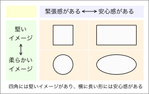
囲みのレベルを合わせる
キーワードを図形で囲むときは、同じレベルのキーワードを同じ図形で囲み、異なるレベルのキーワードは図形の形や線の太さを変えるようにする。
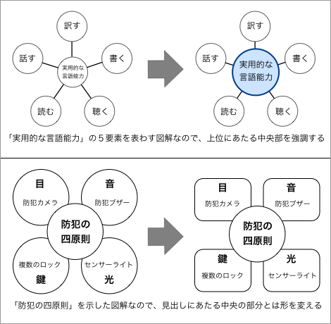
矢印の使い方
矢印は、囲みの間を関係を示すときに、もっともよく使われるパターンである。
矢印には、さまざまな形のものがある。使い方に決まったルールはないが、以下のように使われることが多い。
矢印の形と用途
| 形 | 説明 | 主な用途 |
| 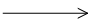 | 直線の矢印 | 何らかの関係を示す（汎用）、変化を示す |
| 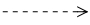 | 破線の矢印 | 予測や推測を示す |
| 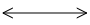 | 両方向の矢印 | 対立を示す、対応を示す、対等であることを示す |
| 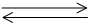 | 双方向の矢印（二重） | 相互作用を示す、（金銭などの）やりとりを示す |
| 三角形の矢印（を並べる） | 連続的な変化を示す、順序を示す |
| 太さの変化する矢印 | 減少や増加を示す、拡大や縮小を示す |
| 向き合った矢印 | 対立を示す、衝突や摩擦を示す |
| 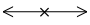 | ×印のついた矢印 | 対応しないことを示す、対立を示す、衝突を示す |
具体的な例を以下に示しておく。
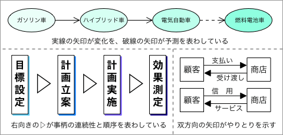
矢印の意味の統一
矢印にはおおよその使い分けはあるが、厳密なルールはない。そのため、矢印はさまざまな意味で解釈される可能性がある。したがって、図解では、矢印の意味を統一／整理しなければならない。
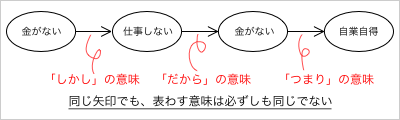
矢印の意味を明確に示すためには、矢印の内部や近くに矢印が表わす意味を書き込めばよい。
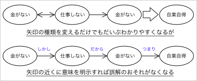
既存のパターンの利用
図解では、既存のパターン（しばしば使われるデザインのパターン）を利用したり、参考にすることができる。
既存のパターンとは、たとえば以下のようなものである。
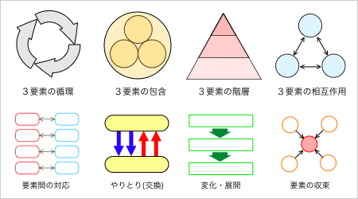
既存のパターンは、ウェブ上のサイト（例：プリントアウトファクトリー：Power Point Factory）からもダウンロードできる。ただし、このようなパターンは便利な反面、思考を枠にはめる（アイディアを平凡なものにする）おそれもあるので、利用する際には注意が必要である。
箇条書きの図解化
箇条書きは、項目を列挙して示すものである。なお、箇条書きについては【→箇条書き】を参照せよ。
箇条書きには、項目の間に直接の関係性がないもの（関係性が単純なもの）と、直接の関係性があるものとがある。
たとえば、次の箇条書きは、『好きな食べ物』にあてはまるものを列挙しただけであり、項目の間には直接の関係性がない。
- 好きな食べ物
-
一方、次の箇条書きは、項目の間に因果関係や相互関係が認められる（直接の関係性がある）ものである。
- 仕事の基本
-
- 計画
- 実行
- 検討
- 科学的方法の３つの軸
-
- 分類
- 理論
- 実証
箇条書きの弱点は、項目の間に関係性がわかりにくいことである。実は、『仕事の基本』では、項目の間に循環的な因果関係が想定されており、『科学的方法の３つの軸』では、項目の間に相互依存関係が想定されている。これらのことを直線と矢印で示すと、次のようになる。
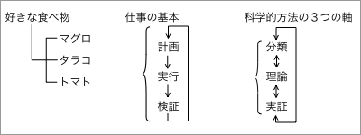
好きな食べ物のように、それぞれの項目の間に直接の関係性がない（項目の間に矢印が書けない）ときには、箇条書きが適切な表示方法だといえる。
一方、項目の間に因果関係や相互関係があるときには図解を用いた方がわかりやすい。たとえば、以下のように図解することができる。
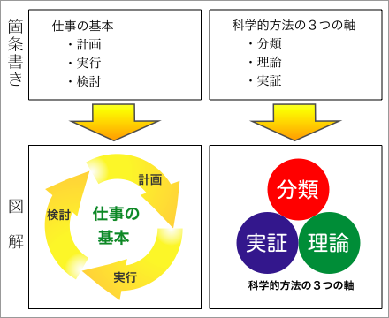
この場合に重要なのは、項目の間に因果関係や相互関係を適切に表示することである。
図解をするときのポイント
実際に図解をするときには、以下の点に注意するとよい。
- 複雑さを避ける
- 漢字を有効に使う
- 視線の動きを考える
- ポイントを書き添える
- 強調したい点を強調する
複雑さを避ける
図解は、イメージを伝える目的でなされるものなので、直感的にわかるものである必要がある。図解では、『ポイントだけがわかればよい』という気持ちが大切である。
漢字を有効に使う
漢字は絵文字なので、イメージを効率的に伝えるのに役立つ。図解では、漢字を有効に使うようにしたい。
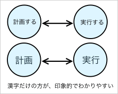
たとえば、「計画する」「実行する」などとするよりも、「計画」「実行」とする方がわかりやすいだろう。表現も端的で、字形も大きくできるからである。
視線の動きを考える
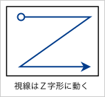
私たちが、プリントや画面を見る際には、一定の視線の動きが認められる。具体的には、『Ｚ』のように視線が動くことが多いのである。
この視線の動きから、次のことが言える。
- タイトルや見出しは上部に書いた方がわかりやすい
- 事柄の展開や進みの方向は、左→右、または、上→下が自然である
- 循環を表わす場合は上から右回り（時計回り）が自然である
- 結論やポイントは下部に右寄せで書いた方がわかりやすい
ポイントを書き添える
図解だからといって、言語表現を使ってはいけないわけではない。
図解の下部にポイントを書き添えることで、伝達の効率がよくなることも少なくない。
強調したい点を強調する
図解では、強調したい点を強調するべきである。そのためには、強調する必要のない部分が目立たないようにするべきである。具体的には、強調したいところにだけ色をつけるなどの工夫が必要になる。
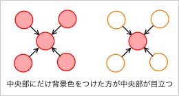
- 参考文献：
-
- 永山嘉昭（2002）『説得できる図解表現200の鉄則』日経BP社.
- 日経サイエンス編集部編（1994）『Macで描く科学イラスト』（別冊日経サイエンス）日本経済新聞社.
- 久恒啓一（2005）［2002］『図で考える人は仕事ができる』（日経ビジネス人文庫）日本経済新聞社.
- 久恒啓一（2008）［2005］『図で考えれば文章がうまくなる』（PHP文庫）PHP研究所.